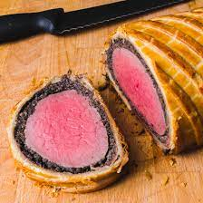

Beef Wellington

Description
An amazing (non original) recipe to Beef Wellington, a
dish I chose because of its appearances on cooking shows
Ingredients
- 2.5lbs beef tenderloin
- 2 tbs butter
- 2 tbs butter
- One chopped onion
Steps
- Preheat oven to 425 degrees F (220 degrees C). Place beef in a small baking dish, and spread with 2 tablespoons softened butter. Bake for 10 to 15 minutes, or until browned. Remove from pan, and allow to cool completely. Reserve pan juices.
- Melt 2 tablespoons butter in a skillet over medium heat. Saute onion and mushrooms in butter for 5 minutes. Remove from heat, and let cool.
- Mix together pate and 2 tablespoons softened butter, and season with salt and pepper. Spread pate over beef. Top with onion and mushroom mixture.
- Roll out the puff pastry dough, and place beef in the center. Fold up, and seal all the edges, making sure the seams are not too thick. Place beef in a 9x13 inch baking dish, cut a few slits in the top of the dough, and brush with egg yolk.
- Bake at 450 degrees F (230 degrees C) for 10 minutes, then reduce heat to 425 degrees F (220 degrees C) for 10 to 15 more minutes, or until pastry is a rich, golden brown. Set aside, and keep warm.
- Place all reserved juices in a small saucepan over high heat. Stir in beef stock and red wine; boil for 10 to 15 minutes, or until slightly reduced. Strain, and serve with beef.
Source
All credits in recipe to Normala